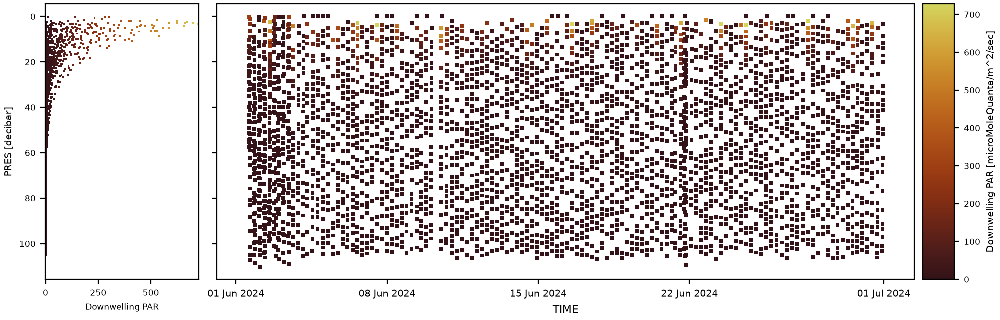

PAR Processing#


Overview#
Photosynthetically active radiation (PAR) is downwelling irradiance in the 400–700 nm band, in µmol photons m⁻² s⁻¹, sampled continuously by the glider so that every dive and climb yields a vertical irradiance profile. The canonical variable name is DOWNWELLING_PAR (OG1 convention); it is configurable everywhere it is used.
pelagos-py does not publish PAR as a product of its own. It quality controls PAR, then condenses it into two per-profile light depths that one downstream correction needs: the non-photochemical quenching (NPQ) correction in the chlorophyll-a fluorescence chain, which has to know how deep sunlight reaches on each cast. Everything else in the pipeline (CTD, oxygen, backscatter) is independent of PAR.
pelagos-py handles PAR in three stages, each implemented by a different step:
Quality control:
range qc,stuck value qcandPAR irregularity qcrun insideApply QCsteps and write Argo flags toDOWNWELLING_PAR_QC(§1).Derived light depths:
Interpolate PARcomputes the euphotic depthZEUand the isolume depthZ_IPARper profile and gap-fills them in time (§2).Consumption:
CHLA Quenchingis the only step in the pipeline that reads those light depths (§3).
raw DOWNWELLING_PAR
└─ Stage 1 Quality control → DOWNWELLING_PAR_QC (Argo flags 1/2/3/4/9)
range · stuck value · PAR irregularity
└─ Stage 2 Interpolate PAR → ZEU, Z_IPAR (per-profile scalars, gap-filled in time)
└─ Stage 3 CHLA Quenching the only consumer
Order matters throughout. The sequence below is the one used in the default template (src/pelagos_py/default_config.yaml), which Pipeline.make_config adapts to each file; examples/configs/all_step_configs.yaml is the fully annotated reference config, listing every parameter of every step.
- name: Load OG1 # DOWNWELLING_PAR arrives from the OG1 file
- name: Format Checker
- name: Apply QC # value-only PAR tests: range, stuck value
- name: Find Profiles # required before anything per-profile
- name: Apply QC # PAR irregularity qc (needs PROFILE_NUMBER)
...
- name: Interpolate PAR # -> ZEU, Z_IPAR
- name: Mixed Layer Depth # -> MLD (needed alongside Z_IPAR)
- name: Deep Correction # CHLA dark-offset correction
- name: CHLA Quenching # consumes ZEU / Z_IPAR / MLD / bbp
- name: Data Export
If your platform has no PAR (e.g. the ALR gliders, which carry no radiometer), Pipeline.make_config omits the PAR QC and Interpolate PAR steps and the quenching method is thomalla2018 (or an MLD-based method), which needs no light input. Nothing else changes, because the pipeline is configuration-driven: removing PAR means deleting steps, not editing code.
Where things live (under src/pelagos_py/steps/): PAR shape QC quality_control/par_irregularity_qc.py; ZEU and Z_IPAR processing/interpolate_par.py; consumption processing/chla_quenching.py.
1. PAR Quality Control#
1.1 Physical basis#
A clean daytime irradiance profile has a characteristic vertical shape: an exponentially decaying lit region near the surface, a transition region, then a deep region of pure sensor noise. That shape is what the QC exploits. Sensor noise is approximately normally distributed and a real light signal is not, so the boundary between signal and noise can be found statistically, without knowing the water type in advance.
Two consequences follow for the simpler value-based tests. First, small negative PAR values are expected rather than erroneous. On a typical mission more than half the PAR record is small and negative: night, and depth below the light field, where the sensor reads its own dark offset and noise. Second, only a physically impossible high value (clear-sky surface PAR peaks near 2000–2500 µmol m⁻² s⁻¹) or a large negative excursion represents a genuine sensor failure.
1.2 Algorithm as implemented#
PAR QC runs inside Apply QC steps like every other test. Flags follow the Argo convention (1 good, 2 probably good, 3 probably bad, 4 bad, 9 missing), and repeated Apply QC calls merge into the same _QC variable, most severe flag winning.
Range test. A value-only test flagging samples outside a configured interval, e.g. range qc: variable_ranges: DOWNWELLING_PAR: {4: [-5, 2500, outside]}.
Stuck-value test. stuck value qc: variables: {DOWNWELLING_PAR: 5} flags N identical consecutive readings. A radiometer returning the same number while the glider crosses a light gradient is dead or saturated. This is a hardware check rather than an optics check.
PAR irregularity test. PAR irregularity qc implements the real-time radiometric QC of La Forgia & Organelli (2025), developed for BGC-Argo and applied here per glider profile. For each profile:
Screening. Missing → 9; below the negative of the noise-equivalent irradiance (NEI) → 3; below 0 or above 2500 → 4.
Day or night is determined from the solar elevation angle, computed from the profile’s latitude, longitude and timestamp (elevation > 0° = day).
Regularisation onto a 0.1 dbar pressure grid (coarsened automatically for very long or deep profiles), so irregular glider sampling does not bias the statistics.
Shapiro–Wilk sweep. Walking down the profile, a normality test is applied to the remaining tail. While the tail still contains real light structure the test rejects normality (p ≈ 0); once the tail is pure noise it stops rejecting. The deepest depth at which normality is still rejected is P_A, the lit/transition boundary.
Daytime verdict. Above P_A → 1. Below P_A a 4th-order polynomial is fitted; its first relative minimum, P_C, marks where the profile stops decaying and starts being noise. Between P_A and P_C → 2; below P_C → 3.
Nighttime verdict. A night profile should be normal everywhere (noise only); if it is, the whole profile is flagged 2. If not, mean PAR above and below P_A are compared: a brighter upper layer is plausible residual twilight or moonlight (2), the reverse is unphysical (3).
Profile-level summary flag is derived from the mix of point flags.
1.3 Default configuration#
range qc:
variable_ranges:
DOWNWELLING_PAR: {4: [-5, 2500, outside]}
stuck value qc:
variables: {DOWNWELLING_PAR: 5}
PAR irregularity qc:
noise_equivalent_estimate: 3e-2 # NEI, µmol m⁻² s⁻¹ (Jutard et al. 2021 default)
plot_profiles: [100, 200] # profile numbers to draw in diagnostics
noise_equivalent_estimate is the sensor’s noise floor, a property of the instrument and not of the water. Use a manufacturer NEI if you have one; otherwise the BGC-Argo default of 3 × 10⁻² is reasonable.
With diagnostics: true, plot_profiles draws those profiles against pressure coloured by flag, which is the quickest way to check that P_A and P_C land where your eye would put them.
1.4 Implementation notes and known limitations#
Required inputs:
DOWNWELLING_PAR, plus each profile’s latitude, longitude and timestamp for the solar elevation calculation, andPROFILE_NUMBERfor the irregularity test. Solar-elevation calculations usepvlib, following Ryan-Keogh.Ordering. The irregularity test needs
PROFILE_NUMBER, so itsApply QCstep must sit afterFind Profiles. The value-only tests can run earlier, so the PAR chain normally uses two separateApply QCcalls. That is fine:Apply QCmay be invoked as often as you like.The irregularity test is per-profile and self-calibrating; it needs no prior knowledge of water type, but it does need the profile to be long enough for the Shapiro–Wilk sweep to reach a noise-only tail.
Note
The most common mistake in configuring PAR QC is a range-test lower bound near zero. Negative PAR is real data: it is night, and depth below the light field. Flagging it away breaks the night-referenced quenching methods in §3, which build their reference from nighttime profiles, and nothing downstream reports the loss.
2. Derived Light Depths (Interpolate PAR)#
2.1 Physical basis#
Despite the name, this step does not interpolate the PAR field. It derives two per-profile scalars from PAR and interpolates those in time; §2.5 explains why the scalars are what get filled.
ZEU, the euphotic depth, is the 1% surface-light level, the conventional base of the euphotic zone. PAR is assumed to decay exponentially with depth (Beer–Lambert), so the diffuse attenuation coefficient K_d can be recovered from a linear regression of log(PAR) against depth.
Z_IPAR, the isolume depth, is the depth at which downwelling PAR crosses a chosen level, by default 15 µmol m⁻² s⁻¹. Physically an isolume is a surface of constant light; iPAR = 15 is used in the NPQ literature as the depth above which photo-physiological quenching is meaningfully active. Comparing it to the mixed layer depth gives the mixing regime. When Z_IPAR ≤ MLD the mixed layer extends into the dark, so cells are circulated between lit and unlit depths faster than they can photo-acclimate (deep mixing). When Z_IPAR > MLD light penetrates below the mixed layer and cells stay lit (shallow mixing), so quenching has a different vertical structure. That single comparison selects the branch of the Terrats et al. (2020) hybrid in §3.
2.2 Algorithm as implemented#
For each unique PROFILE_NUMBER in the dataset:
Sample filtering. Only usable samples feed either calculation: anything whose flag falls in
calculation_flag_filter(default probably bad3, bad4, missing9) is excluded, so Stage 1 QC propagates directly into the quality of both scalars.ZEUcomputation. log(PAR) is regressed linearly against depth; the slope gives K_d, and Z_eu = ln(100)/K_d ≈ 4.605/K_d. The fit is rejected, leavingZEUasNaNfor that profile, when there are fewer than 4 finite, strictly positive samples (not enough signal to fit a slope); when K_d < 0.005 m⁻¹ (implausibly clear water); when K_d > 1.0 m⁻¹ (implausibly turbid, or not a light profile at all); or when Z_eu > 186 m (beyond the clear-water optical limit).Z_IPARcomputation. UnlikeZEUthis is not a fit: the crossing ofipar_levelis read off the observed profile by interpolation, clamped at both ends. If the whole profile is brighter than the level the deepest sample is returned; if the whole profile is darker, 0 m.Time interpolation onto PAR-less casts.
ZEUandZ_IPARare each linearly interpolated in time, against each profile’s median timestamp, onto the casts that carry no PAR. Outside the span bracketed by computed profiles the nearest computed value is held constant; with fewer than two computed profiles no interpolation is attempted.Broadcast. Both scalars are positive-down metres, computed once per profile and broadcast across all measurements of that profile.
2.3 Default configuration#
- name: Interpolate PAR
parameters:
par_var: DOWNWELLING_PAR # source variable
depth_variable: DEPTH # metres, positive down
ipar_level: 15.0 # isolume level -> Z_IPAR
compute_zeu: true
compute_ipar: true
interpolate_zeu: true # fill onto PAR-less casts
interpolate_ipar: true
diagnostics: true
Diagnostics draw one panel per scalar, depth against time, with computed profiles and interpolated fills in different colours. Look for a plausible range for the region and season (tens of metres, not hundreds), no long stretches that are entirely interpolated, and no step changes at the edges of PAR outages.
2.4 Implementation notes and known limitations#
Ordering. After
Find Profiles(the step works per profile) and after the PAR QC (so flagged samples are excluded), beforeCHLA Quenching.Why the scalars are what get filled. Many gliders do not carry PAR on every cast. Logging PAR on upcasts only is very common, and both PAR-carrying example missions in
examples/configs/do exactly that; other missions have gaps from duty-cycling or dropouts. Reconstructing the missing PAR field would mean inventing an irradiance profile, a strong and hard-to-defend assumption. The justification for filling the scalars instead is that euphotic and isolume depths are properties of the water-column optics, varying over hours to days, whereas a missing cast is minutes to a couple of hours from one that has PAR. Interpolating a slowly-varying integrated quantity is far safer than interpolating a rapidly-varying, sun-angle-dependent point measurement.Diurnal variation is not represented.
Z_IPARgenuinely moves with solar elevation, and a linear fill across night smooths that away.Long PAR outages produce long constant-slope fills, so check the diagnostic before trusting the filled values.
Turning interpolation off (
interpolate_zeu: false,interpolate_ipar: false) leaves PAR-less profiles asNaN. A quenching method that needsZEUorZ_IPARthen stops the pipeline if any daytime profile lacks it, so only turn interpolation off when every daytime profile has measured PAR, or use a method that does not need these light depths.
Note
Interpolated
ZEUandZ_IPARare estimates, not observations. Data users should treat filled profiles differently from computed ones, and the diagnostic panels distinguish the two by colour for exactly this reason.
3. Use in the Chlorophyll Quenching Correction#
3.1 Physical basis#
The only consumer of the derived light depths is CHLA Quenching. NPQ is photo-protective: in bright near-surface light, phytoplankton dissipate absorbed energy as heat rather than fluorescence, so a fluorometer under-reads chlorophyll during the day. Every quenching method reconstructs what daytime fluorescence should have been; they differ in the reference used and the depth range it is applied over. That range is where PAR enters.
3.2 Algorithm as implemented#
Method |
Reference used |
Depth window |
PAR inputs |
|---|---|---|---|
|
max fluorescence:backscatter ratio |
0 → MLD |
none |
|
max fluorescence |
0 → MLD |
none |
|
max fluorescence |
0 → ZEU |
ZEU |
|
one global night Chl-vs-bbp regression for the whole deployment |
0 → ZEU |
ZEU |
|
max fluorescence:backscatter ratio |
0 → ZEU |
ZEU |
|
previous night’s binned fl:bbp ratio profile |
0 → quenching depth, searched within |
none |
|
max fl:bbp ratio, or a light-driven sigmoid |
0 → min(MLD, Z_IPAR) |
Z_IPAR, plus raw PAR |
MLD-based methods (Sackmann, Xing 2012) assume quenching is confined to the mixed layer: cheap and PAR-free, but wrong whenever light penetrates below it. ZEU-based methods (Biermann, Hemsley, Swart) replace “mixed layer” with “euphotic zone”, giving a light-defined window rather than a density-defined one. That is why ZEU is computed.
Xing 2018 with the Terrats 2020 hybrid is the most light-aware. It compares Z_IPAR against MLD to classify the mixing regime, then branches:
Under deep mixing (
Z_IPAR≤ MLD) it applies the “S08+” scheme: within the NPQ layer (the shallower of MLD and the isolume depth) the fluorescence:backscatter ratio is maximised and fluorescence reset tobbp × R_max.Under shallow mixing (
Z_IPAR> MLD), a sigmoid in iPAR de-quenches each sample below the MLD using the raw PAR value at that depth; above the MLD a uniformbbp × R_MLDis applied. This is the only place in the pipeline where the PAR profile itself, rather than a derived scalar, is used pointwise.
hybrid: false forces S08+ everywhere regardless of regime.
Day/night gating applies to every method. The quenching step recomputes solar elevation per profile and corrects only profiles above day_min_elevation; night references are built only from profiles below night_max_elevation. Twilight profiles between the two are neither corrected nor used as references.
3.3 Default configuration#
- name: CHLA Quenching
parameters:
method: xing2018 # no default; choose from the table in §3.2
hybrid: true # xing2018 only; false forces S08+ everywhere
day_min_elevation: 0.0 # degrees; profiles above this are corrected
night_max_elevation: 0.0 # degrees; profiles below this build the reference
max_photic_depth: 100.0 # metres; thomalla2018 only
3.4 Implementation notes and known limitations#
The hybrid needs a full PAR profile on every daytime cast. Because the shallow-mixing sigmoid reads PAR pointwise, the hybrid is automatically disabled on missions with incomplete PAR, falling back to pure Xing 2018. Interpolated scalars cannot substitute for a pointwise PAR field.
Thomalla 2018 deliberately needs no PAR, bounding its quenching-depth search with a fixed
max_photic_depth(default 100 m) instead ofZEU. That makes it the natural choice for platforms with no radiometer. It does still need nighttime profiles, which is why over-aggressive PAR range QC (§1.5) can break it indirectly.Widen the twilight band by separating
day_min_elevationandnight_max_elevationif low-sun casts contaminate the night references.Method choice should follow the data actually available, not recency: Xing 2018 with the Terrats hybrid when PAR is on every cast alongside backscatter and MLD; a ZEU-based method if PAR coverage is partial but reliable; Thomalla 2018 if there is no PAR at all.
4. Outputs#
PAR quality control writes flags without modifying the measured values. Interpolate PAR adds two new per-profile variables.
Variable |
Description |
|---|---|
|
Downwelling PAR, µmol photons m⁻² s⁻¹. Read as an input to all three stages; never modified. |
|
Argo quality flags (1/2/3/4/9) merged across the range, stuck-value and irregularity tests, most severe flag winning (§1). |
|
Euphotic depth, positive-down metres, computed once per profile and broadcast across that profile’s samples; |
|
Isolume depth at |
CHLA Quenching consumes ZEU, Z_IPAR, MLD and backscatter to correct the chlorophyll fluorescence record; it is configured to run after Interpolate PAR and after Mixed Layer Depth so that all three inputs are present.
5. Practical checklist#
Does the mission carry PAR at all, and on which casts? Upcast-only logging is common and drives the whole interpolation design.
Set the range QC without a tight lower bound. Negative PAR is night and depth below the light field; flagging it away breaks the night-referenced quenching methods (§1.5).
Check the NEI against the actual radiometer if you can.
Put the irregularity test after
Find Profiles, in its ownApply QCcall.Look at the
Interpolate PARdiagnostic before trustingZEUandZ_IPAR. Check the computed-to-interpolated ratio, and whether the values are physically plausible.Choose the quenching method from what you actually have, not from what is newest.
Sanity-check the sign of the outcome. NPQ corrections should only ever raise daytime near-surface fluorescence, never lower it, and corrected day profiles should resemble adjacent night profiles.
6. Recommended reporting#
A scientific methods section describing PAR processing with pelagos-py should report:
which PAR quality control tests were applied, and in particular the range-test bounds used, since a lower bound above the sensor’s dark offset removes the nighttime data that night-referenced quenching methods depend on;
that the profile-shape test of La Forgia & Organelli (2025) was applied per profile, and the noise-equivalent irradiance used, stating whether it came from the manufacturer or from the BGC-Argo default;
how the light depths were derived (the 1% level from a Beer–Lambert K_d fit for
ZEU, the observed crossing of the isolume level forZ_IPAR), and the isolume level chosen;whether the derived scalars were interpolated in time onto PAR-less casts, and if so what fraction of profiles carry interpolated rather than computed values;
the quenching method selected, the light depth it uses as its depth window, and for
xing2018whether the Terrats hybrid was active or was automatically disabled by incomplete PAR coverage.
An example methods description is given below.
Downwelling PAR was quality controlled with a range test (values outside −5 to 2500 µmol photons m⁻² s⁻¹ flagged bad), a stuck-value test over 5 consecutive identical readings, and the profile-shape irregularity test of La Forgia & Organelli (2025), applied per profile with a noise-equivalent irradiance of 3 × 10⁻² µmol photons m⁻² s⁻¹ (Jutard et al., 2021). The lower range bound was set below zero deliberately, so that nighttime and sub-euphotic records were retained for use as quenching references. Flags follow the Argo convention (Wong et al., 2025).
Two light depths were derived per profile. The euphotic depth was taken as the 1% surface-light level, obtained by linear regression of log(PAR) against depth to give the diffuse attenuation coefficient K_d, with fits rejected for fewer than four valid samples, K_d outside 0.005–1.0 m⁻¹, or Z_eu exceeding 186 m. The isolume depth was read off the observed profile at 15 µmol photons m⁻² s⁻¹. Because PAR was logged on upcasts only, both scalars were linearly interpolated in time onto the casts carrying no PAR; the underlying PAR field was not reconstructed.
Non-photochemical quenching was corrected using the method of Xing et al. (2018) with the mixing-regime hybrid of Terrats et al. (2020), which compares the isolume depth against the mixed layer depth and applies either a maximum fluorescence:backscatter reset (deep mixing) or a light-driven sigmoid in iPAR (shallow mixing). Only profiles with a solar elevation above 0° were corrected, and night references were built from profiles below 0°.
References#
Entries below carry the metadata available in the source material; titles and author initials are still to be completed before publication.
Biermann et al. (2015). Ocean Science, 11, 83–91.
Hemsley et al. (2015). Biogeosciences, 12, 7093.
Jutard et al. (2021). Source of the default noise-equivalent irradiance.
La Forgia & Organelli (2025). Limnology and Oceanography: Methods, 23, 526–542. doi:10.1002/lom3.10701. The profile-shape irregularity test.
Sackmann et al. (2008).
Swart et al. (2015). Journal of Plankton Research, 37, 635.
Terrats et al. (2020). Geophysical Research Letters.
Thomalla et al. (2018). Limnology and Oceanography: Methods, 16, 132.
Wong et al. (2025). Argo Quality Control Manual. doi:10.13155/33951. The flag convention.
Xing et al. (2012). Limnology and Oceanography: Methods.
Xing et al. (2018). Optics Express, 26, 24734.